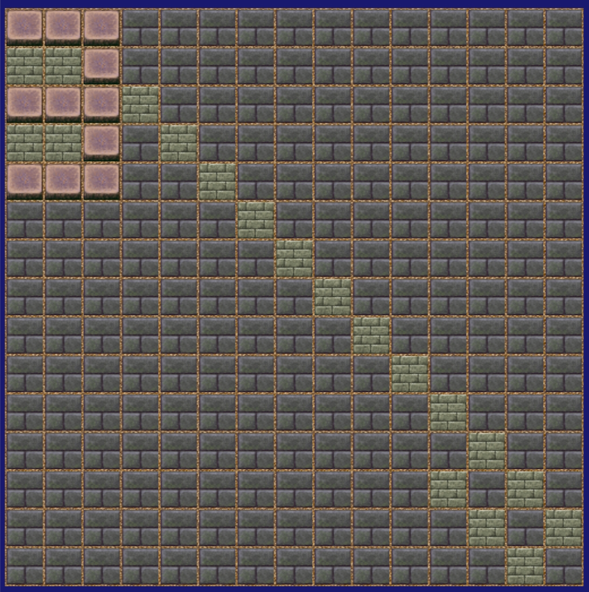

1.のボタンをクリックする
2.リバーシ盤にある盤面をクリックする
3.クリックしていってリバーシ盤に隠れた数字を明らかにしよう
4.例は以下の画像の通りです(=この場合に入力する値は「3」が適切)

5.何もない盤面が
 、
隠れた数字の一部を表す盤面がになります
、
隠れた数字の一部を表す盤面がになります6.ブロックのクリックは計30回まで可能です
7.ブロックのクリックが終了したとき、あるいは数字に検討がついたとき、
の中に半角英数字を入力してください
8.その後にを入力してください
9.そうすることで数字の内容の正解や不正解の結果が表示されます
10.数字の内容を変更したいとき、あるいはゲームをリセットしたいときに、
のボタンをクリックしてください